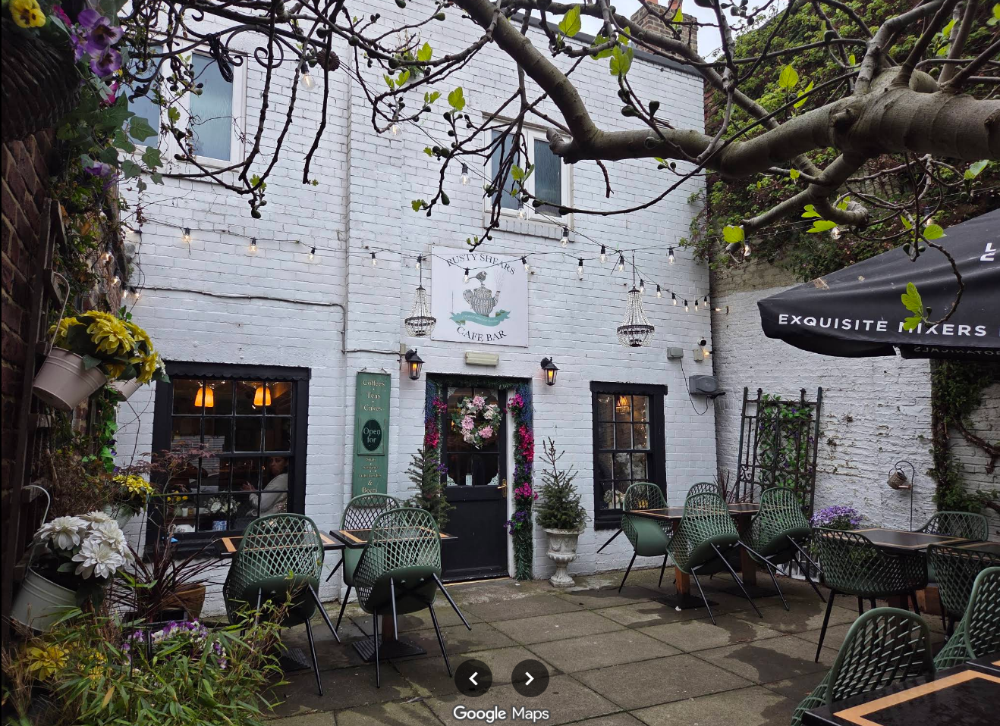
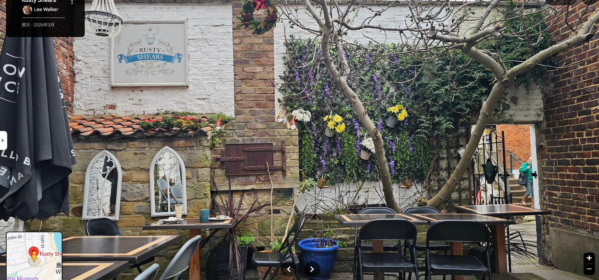
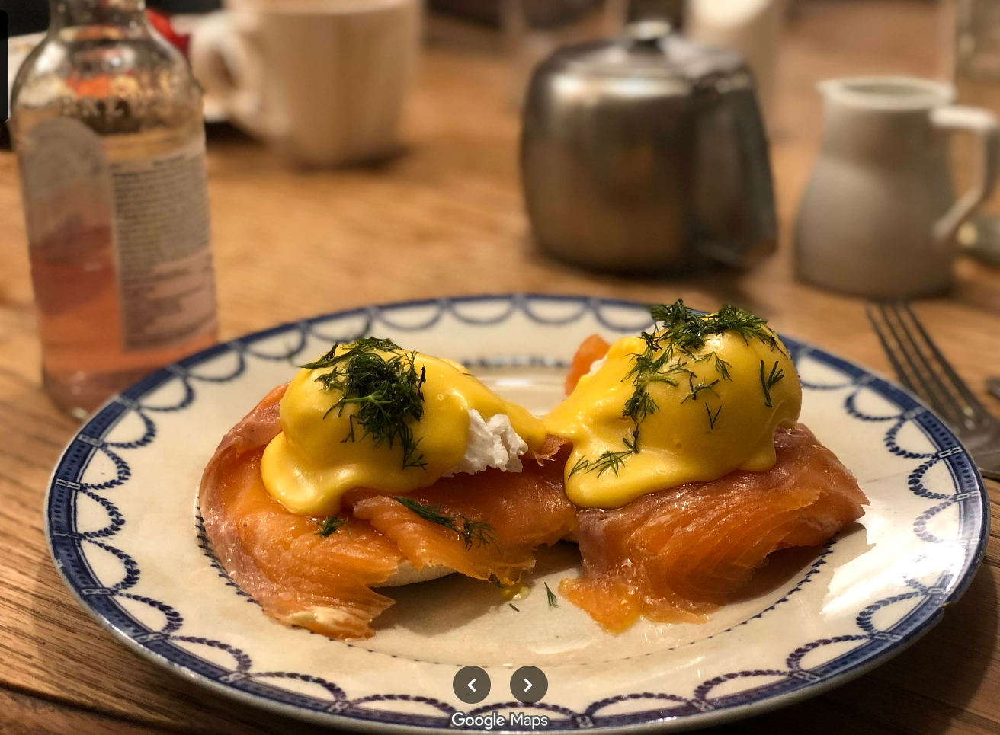

A vintage tea shop with 150 gins and a giant fig tree, tucked down a side street in Whitby. Breakfast by morning, loose-leaf tea by afternoon, candlelit gin by night. Not fast food — a place to linger.


Address
4 Silver Street
Whitby
YO21 3BU
Phone
01947 825111
Hours
Monday to Saturday 9:00 – 17:00
Sunday 10:00 – 16:00
Dogs welcome — we’ll bring out a sausage.